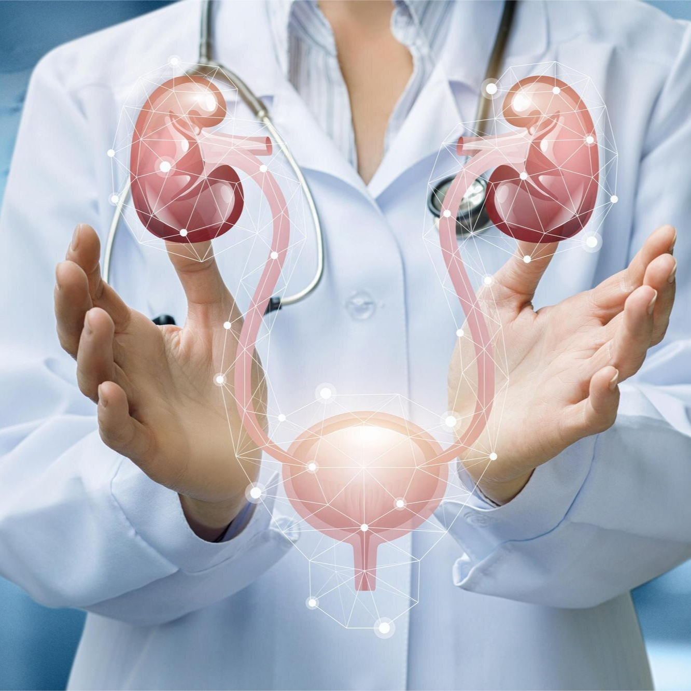

Comprehensive Urology Treatments at Rashtrotthana Hospital
The Urology Department at Rashtrotthana Hospital is renowned for providing advanced urology care in Bangalore, offering expert treatments for both male and female urological conditions. Our top urologists in Bangalore specialize in diagnosing and treating urinary tract disorders, kidney stones, prostate issues and bladder conditions with cutting-edge technology and affordable urology surgery in Bangalore.


Why Choose Rashtrotthana Hospital for Urology Care?
- Experienced Urology Specialists: Our urology surgery specialists in Bangalore are highly skilled in minimally invasive and laparoscopic procedures, ensuring safe and effective treatments.
- State-of-the-Art Facilities: We have a dedicated ICU, 8-bed dialysis unit and modern surgical suites for kidney stone removal, bladder infection treatment and prostate surgeries.
- Advanced Urology Treatments Available: We use laser treatment for kidney stones in Bangalore and offer specialized procedures such as Transurethral Resection of the Prostate (TURP).
- Comprehensive Urological Care: From painful urination treatment to urinary blockage treatment, our team ensures personalized care for each patient.
Advanced Urology Treatments Available
Kidney Stone Treatment in Bangalore
Kidney stones can cause severe pain, urine blockage and infections. Our hospital offers advanced laser treatment for kidney stones in Bangalore, ensuring quick recovery with minimal discomfort. We also provide affordable kidney stone removal surgery in Bangalore.
Bladder Infection & Urinary Issues
If you experience burning sensation while urinating, bladder pain, or frequent urination, visit our urology specialist hospital in Bangalore for bladder infection treatment in Bangalore. We provide affordable bladder infection treatment in Bangalore, ensuring relief from discomfort.
Prostate Issues & Treatment
Prostate problems are common, especially in men over 50. Our specialists offer minimally invasive urology surgery for conditions like prostate enlargement and prostate cancer. The top urologists in Bangalore at Rashtrotthana Hospital ensure effective prostate treatment for better quality of life.
Expert Urological Cancer Treatments in Bangalore
Looking for advanced urology care in Bangalore? At Rashtrotthana Hospital, we specialize in diagnosing and treating urological cancers with cutting-edge surgical procedures and personalized care.